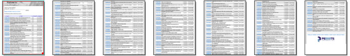

16.1 OpenUrl Method: Overview
16.2 Pagination
16.3 Hyperlinks
16.4 Miscellaneous Parameters
16.5 IE Compatibility Mode
16.1 OpenUrl Method: Overview
16.1.1 OpenUrl vs. ImportFromUrl
As of Version 2.9, AspPDF expands its HTML-to-PDF functionality
by adding a new method, OpenUrl, to the PdfDocument object. Like the ImportFromUrl method
described in Chapter 13, OpenUrl helps convert an arbitrary URL, or an HTML string,
to a PDF document, but it does so differently.
While ImportFromUrl relies on our own in-house HTML-rendering engine, OpenUrl delegates the job to
Microsoft Internet Explorer by connecting to the IE WebBrowser object residing in the MSHTML.dll library.
Harnessing the robust IE engine helps achieve the perfect PDF snapshot of any HTML document, no matter how complex, whereas
the ImportFromUrl method is only capable of rendering basic HTML.
However, unlike ImportFromUrl, the OpenUrl method produces a rasterized image of the HTML document.
This method's output is essentially a static bitmap convertible to PDF. The scalability and searchability of the original
document is not preserved.
16.1.2 OpenUrl Usage
The PdfDocument.OpenUrl method expects four arguments: a URL or HTML string, a list of parameters, and a username and password.
The first argument is required, the others are optional. The method returns an instance of the PdfImage
object representing the image of the specified URL or HTML string. This image can then
be drawn on a PDF page via the PdfCanvas.DrawImage method in an arbitrary position and at an arbitrary scale.
By default, the entire web document is converted to a single image. Pagination is covered in the next section.
The following code sample converts our corporate web site http://www.persits.com to a PDF:
| VBScript |
|
Set Pdf = Server.CreateObject("Persits.Pdf")
' Create empty document
Set Doc = Pdf.CreateDocument
' Add a new page
Set Page = Doc.Pages.Add
' Convert www.persits.com to image
Set Image = Doc.OpenUrl( "http://www.persits.com" )
' Shrink as needed to fit width
Scale = Page.Width / Image.Width
' Align image top with page top
Y = Page.Height - Image.Height * Scale
' Draw image
Set Param = Pdf.CreateParam
Param("x") = 0
Param("y") = Y
Param("ScaleX") = Scale
Param("ScaleY") = Scale
Page.Canvas.DrawImage Image, Param
' Save document, the Save method returns generated file name
Filename = Doc.Save( Server.MapPath("iehtmltopdf.pdf"), False )
|
| C# |
|
IPdfManager objPdf = new PdfManager();
// Create empty document
IPdfDocument objDoc = objPdf.CreateDocument( Missing.Value );
// Add a new page
IPdfPage objPage = objDoc.Pages.Add( Missing.Value, Missing.Value, Missing.Value );
// Convert www.persits.com to image
IPdfImage objImage = objDoc.OpenUrl( "http://www.persits.com", Missing.Value, Missing.Value, Missing.Value );
// Shrink as needed to fit width
float fScale = objPage.Width / objImage.Width;
// Align image top with page top
float fY = objPage.Height - objImage.Height * fScale;
// Draw image
IPdfParam objParam = objPdf.CreateParam( Missing.Value );
objParam["x"].Value = 0;
objParam["y"].Value = fY;
objParam["ScaleX"].Value = fScale;
objParam["ScaleY"].Value = fScale;
objPage.Canvas.DrawImage( objImage, objParam );
// Save document, the Save method returns generated file name
string strFilename = objDoc.Save( Server.MapPath("iehtmltopdf.pdf"), false );
|
Click the links below to run this code sample:
http://localhost/asppdf/manual_16/16_simple.asp
http://localhost/asppdf/manual_16/16_simple.aspx

16.1.3 Authentication
If the URL being opened is protected with Basic authentication, the valid username and password must be passed to the OpenUrl method
as the 3rd and 4th arguments, as follows:
Set Image = Doc.OpenUrl( url, "", "username", "password" )
Under .NET, the Username and Password arguments can instead be used to pass an authentication cookie
in case both the script calling OpenUrl and the URL itself
are protected by the same user account under .NET Forms authentication.
To pass a cookie to OpenUrl, the cookie name prepended with the prefix "Cookie:" is passed
via the Username argument, and the cookie value via the Password argument.
The following example illustrates this technique.
Suppose you need to implement a "Click here for a PDF version of this page" feature
in a .NET-based web application. The application is protected with .NET Forms Authentication:
<authentication mode="Forms">
<forms name="MyAuthForm" loginUrl="login.aspx" protection="All">
<credentials passwordFormat = "SHA1">
<user name="JSmith" password="13A23E365BFDBA30F788956BC2B8083ADB746CA3"/>
... other users
</credentials>
</forms>
</authentication>
The page that needs to be converted to PDF, say report.aspx, contains the button
"Download PDF version of this report" that invokes another script, say convert.aspx, which
calls OpenUrl. Both scripts reside in the same directory under the same protection.
If convert.aspx simply calls objDoc.OpenUrl( "http://localhost/dir/report.aspx", ... ),
the page that ends up being converted will be login.aspx and not report.aspx, because
AspPDF itself has not been authenticated against the user database and naturally will be forwarded
to the login screen.
To solve this problem, we just need to pass the authentication cookie whose name is MyAuthForm
(the same as the form name) to OpenUrl. The following code (placed in convert.aspx) demonstrates this technique:
| C# |
string strName = "Cookie:" + Request.Cookies["MyAuthForm"].Name;
string strValue = Request.Cookies["MyAuthForm"].Value;
IPdfManager objPdf = new PdfManager();
// Create empty document
IPdfDocument objDoc = objPdf.CreateDocument( Missing.Value );
// Add a new page
IPdfPage objPage = objDoc.Pages.Add( Missing.Value, Missing.Value, Missing.Value );
// Convert URL to image
IPdfImage objImage = objDoc.OpenUrl( "http://localhost/dir/report.aspx", Missing.Value, strName, strValue );
...
|
16.1.4 Direct HTML Feed
The first argument to the OpenUrl method can be used to directly pass an HTML string instead of a URL.
The string must start with the characters "<HTML" or "<html"
to signal that the value is to be treated as an HTML text and not a URL.
The non-ASCII characters in the string must be in Unicode format, and not encoded in any way. For example:
strText = "<html><table border><tr><th>AA</th><th>BB</th></tr><tr><td>CC</td><td>DD</td></tr></table></html>"
strText = Replace( strText, "AA", "Greek" )
strText = Replace( strText, "BB", "Chinese" )
strText = Replace( strText, "CC", ChrW( &H03A9 ) )
strText = Replace( strText, "DD", ChrW( &H56FD ) )
Set Image = Doc.OpenUrl( strText )
...
The script above produces the following output:

Note that in the direct HTML feed mode, there is no "base" URL by default, so if your HTML string contains images and other objects
pointed to via their relative paths, you must also provide the base URL information via the <base> tag, as follows:
strText = "<html><base href=""c:\images\"">
...
<img src=""logo.png"">
...
</html>"
16.2 Pagination
16.2.1 PageHeight & AspectRatio Parameters
As mentioned above, the OpenUrl method returns the snapshot of the HTML document as a single continuous image by default.
For long HTML documents spanning multiple pages, this default behavior may not be practical as multiple images representing the individual pages
of the document are needed instead.
The OpenUrl method is capable of splitting the HTML document's snapshot image into multiple pages. When used in the pagination mode,
OpenUrl generates a linked list of images. The method returns an instance of the PdfImage object which represents
the top page of the document. The subsequent images are obtained via the PdfImage.NextImage property.
This property returns the next PdfImage object in the sequence
or Nothing (null) if the current image is the last one in the linked list.
The pixel height of each individual page image can either be specified directly, via the PageHeight parameter,
or be computed based on the current document's page width and the desired aspect ratio specified via the AspectRatio parameter.
For example, the line
Set Image = Doc.OpenUrl( url, "PageHeight=792" )
makes all page images (except possibly the last one) 792 pixels high.
Since the width of the document image wholly depends on the underlying HTML code and is not always known in advance,
it is often more practical to specify the page height indirectly, via an aspect ratio that matches the aspect ratio of the PDF page on which
this image is ultimately to be drawn.
For example, the line
Set Image = Doc.OpenUrl( url, "AspectRatio=0.7727" )
makes the aspect ratio of all the page images (except possibly the last one) the same as that of the standard US Letter page (which is 8.5"/11" = 0.7727.)
The image height is computed automatically by dividing the document width, whatever it happens to be, by the specified aspect ratio value.
When drawing the images on the PDF pages, a scaling factor has to be applied to make the image occupy the entire area of the page.
The PageHeight and AspectRatio parameters are mutually exclusive. If both are specified, PageHeight is ignored.
The following code sample converts the URL http://support.persits.com/default.asp?displayall=1 to a multi-page PDF
with pagination based on the US Letter aspect ratio:

| VBScript |
|
Set Pdf = Server.CreateObject("Persits.Pdf")
' Create empty document
Set Doc = Pdf.CreateDocument
Set Param = Pdf.CreateParam
' Convert URL to image
Set Image = Doc.OpenUrl( "http://support.persits.com/default.asp?displayall=1", "AspectRatio=0.7727" )
' Iterate through all images
While Not Image Is Nothing
' Add a new page
Set Page = Doc.Pages.Add
' Compute scale based on image width and page width
Scale = Page.Width / Image.Width
' Draw image
Param("x") = 0
Param("y") = Page.Height - Image.Height * Scale
Param("ScaleX") = Scale
Param("ScaleY") = Scale
Page.Canvas.DrawImage Image, Param
' Go to next image
Set Image = Image.NextImage
Wend
' Save document, the Save method returns generated file name
Filename = Doc.Save( Server.MapPath("pages.pdf"), False )
|
| C# |
|
IPdfManager objPdf = new PdfManager();
// Create empty document
IPdfDocument objDoc = objPdf.CreateDocument( Missing.Value );
IPdfParam objParam = objPdf.CreateParam( Missing.Value );
// Convert URL to image
IPdfImage objImage = objDoc.OpenUrl( "http://support.persits.com/default.asp?displayall=1", "AspectRatio=0.7727",
Missing.Value, Missing.Value );
// Iterate through all images
while( objImage != null )
{
// Add a new page
IPdfPage objPage = objDoc.Pages.Add( Missing.Value, Missing.Value, Missing.Value );
// Compute scale based on image width and page width
float fScale = objPage.Width / objImage.Width;
// Draw image
objParam["x"].Value = 0;
objParam["y"].Value = objPage.Height - objImage.Height * fScale;
objParam["ScaleX"].Value = fScale;
objParam["ScaleY"].Value = fScale;
objPage.Canvas.DrawImage( objImage, objParam );
// Go to next image
objImage = objImage.NextImage;
}
// Save document, the Save method returns generated file name
string strFilename = objDoc.Save( Server.MapPath("pages.pdf"), false );
|
Click the links below to run this code sample:
http://localhost/asppdf/manual_16/16_pages.asp
http://localhost/asppdf/manual_16/16_pages.aspx
16.2.2 Hemming
The code sample in the previous subsection produces a paginated PDF document in which the page delimiters often fall on critical content
such as text or images, as shown below:
For cleaner cutting, the OpenUrl method can be instructed to push the bottom edge of each page upwards until it meets a relatively blank row of pixels.
For the lack of a better term, we dubbed this process "hemming", a word used by tailors. Hemming reduces the height of some or all page images somewhat.
By default, OpenUrl performs no hemming. If the Hem parameter is specified and set to a non-zero value,
OpenUrl scans the specified number of pixel rows of each page, starting with the bottom row, looking for a
row with the fewest number of pixels deviating from the white background.
Once this row is found, it is used as the new page delimiter row, and the next page begins with the row directly below it.
If Hem is set to a negative number such as -1, the entire page image is scanned in search for a suitable row.
The background color against which the pixels are compared is specified via the HemColor parameter and is usually white.
If this parameter is omitted, the predominant color for each row is computed and used as the base color instead.
The image below demonstrates the improvement in pagination if the code sample above is modified by adding the Hem and HemColor parameter,
as follows:
Set Image = Doc.OpenUrl( "http://support.persits.com/default.asp?displayall=1", "AspectRatio=0.7727; Hem=40; HemColor=white")
16.2.3 Colored Page Breaks
As of Version 3.0, the OpenUrl method is capable of splitting a document into pages along colored horizontal delimiters contained in the document.
The parameter PageBreakColor specifies the color of the delimiter.
For example, an HTML document may contain the following construct where the page break should be:
<div style="background-color: green; width: 100%; height: 1pt"></div>
This construct appears in the document as a thin green horizontal line. Setting the PageBreakColor parameter to green, will cause
OpenUrl to create a page break right before this green line, as follows:
Set Image = Doc.OpenUrl( strUrl, "AspectRatio=0.7727; PageBreakColor=green")
When PageBreakColor is specified, OpenUrl scans each page image from the top down looking for a row of pixels of the specified color.
The parameter PageBreakThreshold specifies what percentage of pixels in a row must be of the specified color
for this row to be considered a page break line. By default, this value is 0.8 which defines the default threshold percentage to be 80%.
16.3 Hyperlinks
The OpenUrl method is capable of preserving the hyperlinks on the HTML document being converted.
If the method is called with the parameter Hyperlinks set to True,
every image object it generates is populated with the collection of PdfRect objects,
each representing a hyperlink depicted on this image. It is your application's responsibility to draw those hyperlinks
(in the form of link annotations connected to URL actions) on the PDF pages along with the images themselves.
Annotations and actions are described in Chapter 10 - Interactive Features.
As of Version 2.9, the PdfImage object is equipped with the Hyperlinks
property which returns a collection of PdfRect objects.
The PdfRect object encalsulates the standard properties of a rectange (Left, Bottom, Top, Right, Width, Height)
and also a string property, Text. The properties (Left, Bottom) and (Width, Height)
return the coordinates of the lower-left corner of the hyperlink
relative to the lower-left corner of the image to which this hyperlink belongs, and the hyperlink's dimensions, respectively.
The Text property returns the target URL of this hyperlink.
Note that the coordinates of the hyperlinks are provided in the coordinate space of the image (with its origin in the lower-left corner, as in standard
PDF practice.)
When the image is drawn on a PDF page at a certain location (as specified by the X and Y
parameters of the DrawImage method), the hyperlink annotations must be drawn with the same X and Y displacements.
Also, if scaling is applied to the image via the ScaleX and ScaleY parameters of the DrawImage method,
the same scaling must apply to the hyperlink coordinates and dimensions as well. Failure to adjust the hyperlink coordinates
properly will result in a misalignment between the depiction of the hyperlink on the page and the actual clickable hyperlink area.
The following code sample performs hemming (described in the previous section) as well as hyperlink rendering.
Clickable hyperlinks on the PDF pages are created with the help of the PdfAnnot and PdfAction objects.
Note that the same scaling is applied to both the image and the coordinates and dimensions of the link annotations.
In addition to that, the Y-coordinate shift applied to the image is also applied to the annotations (the X-coordinate
shift is 0 in our example.)
HyperlinkParam("x") = Rect.Left * Scale
HyperlinkParam("y") = Rect.Bottom * Scale + Param("y")
HyperlinkParam("width") = Rect.Width * Scale
HyperlinkParam("height") = Rect.Height * Scale
| VBScript |
|
Set Pdf = Server.CreateObject("Persits.Pdf")
' Create empty document
Set Doc = Pdf.CreateDocument
' Parameter object for image drawing
Set Param = Pdf.CreateParam
' Parameter object for hyperlink annotation drawing
Set HyperlinkParam = PDF.CreateParam
HyperlinkParam.Set "Type = link"
' Convert URL to image. Enable hyperlinks. Use hemming.
Set Image = Doc.OpenUrl( "http://support.persits.com/default.asp?displayall=1", _
"AspectRatio=0.7727; hyperlinks=true; hem=50; hemcolor=white" )
' Iterate through all images
While Not Image Is Nothing
' Add a new page
Set Page = Doc.Pages.Add
' Compute scale based on image width and page width
Scale = Page.Width / Image.Width
' Draw image
Param("x") = 0
Param("y") = Page.Height - Image.Height * Scale
Param("ScaleX") = Scale
Param("ScaleY") = Scale
Page.Canvas.DrawImage Image, Param
' Now draw hyperlinks from the Image.Hyperlinks collection
For Each Rect In Image.Hyperlinks
HyperlinkParam("x") = Rect.Left * Scale
' Y-coordinate must be lifted by the same amount as the image itself
HyperlinkParam("y") = Rect.Bottom * Scale + Param("y")
HyperlinkParam("width") = Rect.Width * Scale
HyperlinkParam("height") = Rect.Height * Scale
HyperlinkParam("border") = 0
' Create link annotation
Set Annot = Page.Annots.Add("", HyperlinkParam)
Annot.SetAction Doc.CreateAction("type=URI", Rect.Text)
Next
' Go to next image
Set Image = Image.NextImage
Wend
' Save document, the Save method returns generated file name
Filename = Doc.Save( Server.MapPath("hyperlinks.pdf"), False )
|
| C# |
|
IPdfManager objPdf = new PdfManager();
// Create empty document
IPdfDocument objDoc = objPdf.CreateDocument( Missing.Value );
// Parameter object for image drawing
IPdfParam objParam = objPdf.CreateParam( Missing.Value );
// Parameter object for hyperlink annotation drawing
IPdfParam objHyperlinkParam = objPdf.CreateParam( Missing.Value );
objHyperlinkParam.Set( "Type = link" );
// Convert URL to image. Enable hyperlinks. Use hemming.
IPdfImage objImage = objDoc.OpenUrl( "http://support.persits.com/default.asp?displayall=1",
"AspectRatio=0.7727; hyperlinks=true; hem=50; hemcolor=white",
Missing.Value, Missing.Value );
// Iterate through all images
while( objImage != null )
{
// Add a new page
IPdfPage objPage = objDoc.Pages.Add( Missing.Value, Missing.Value, Missing.Value );
// Compute scale based on image width and page width
float fScale = objPage.Width / objImage.Width;
// Draw image
objParam["x"].Value = 0;
objParam["y"].Value = objPage.Height - objImage.Height * fScale;
objParam["ScaleX"].Value = fScale;
objParam["ScaleY"].Value = fScale;
objPage.Canvas.DrawImage( objImage, objParam );
// Now draw hyperlinks from the Image.Hyperlinks collection
foreach( IPdfRect objRect in objImage.Hyperlinks )
{
objHyperlinkParam["x"].Value = objRect.Left * fScale;
// Y-coordinate must be lifted by the same amount as the image itself
objHyperlinkParam["y"].Value = objRect.Bottom * fScale + objParam["y"].Value;
objHyperlinkParam["width"].Value = objRect.Width * fScale;
objHyperlinkParam["height"].Value = objRect.Height * fScale;
objHyperlinkParam["border"].Value = 0;
// Create link annotation
IPdfAnnot objAnnot = objPage.Annots.Add("", objHyperlinkParam, Missing.Value, Missing.Value);
objAnnot.SetAction( objDoc.CreateAction("type=URI", objRect.Text) );
}
// Go to next image
objImage = objImage.NextImage;
}
// Save document, the Save method returns generated file name
string strFilename = objDoc.Save( Server.MapPath("hyperlinks.pdf"), false );
|
Click the links below to run this code sample:
http://localhost/asppdf/manual_16/16_hyperlinks.asp
http://localhost/asppdf/manual_16/16_hyperlinks.aspx
16.4 Miscellaneous Parameters
16.4.1 Allowed Content
By default, the OpenUrl method instructs Internet Explorer to only display images and videos when rendering the HTML document.
The method supports six parameter, all optional, that control the type of content IE is allowed to load. These parameters are:
- Images (True by default) - instructs IE to load images;
- Video (True by default) - instructs IE to load video;
- DownloadActiveX (False by default) - instructs IE to download ActiveX controls;
- RunActiveX (False by default) - instructs IE to run ActiveX controls;
- Java (False by default) - instructs IE to enable Java applets;
- Scripts (False by default) - instructs IE to enable scripts.
16.4.2 Threading
OpenUrl creates a separate thread of execution to communicate with IE. Failure to create a separate
thread would cause the method to hang when used under ASP.NET (but not under classic ASP.)
While it is recommended that the separate-thread mode be used under both ASP and ASP.NET,
there is still a way to enable the single-thread mode by setting the parameter SingleThread
to True. The single-thread mode of operation can only be used in classic ASP and stand-alone environments but not in ASP.NET.
16.4.3 Internal Window Dimensions
OpenUrl creates an internal window to hold the WebBrowser control. The default dimensions of this window is 100x100.
In most cases, the window is resized automatically to accommodate the HTML document. However,
if the specified URL is a frameset, the window may retain its original size which is usually not large enough for
the HTML content to fit. The parameters WindowWidth and WindowHeight enable you to
specify a window size large enough to accommodate your frameset.
16.5 IE Compatibility Mode
In most cases, the IE rendering engine runs under a "compatibility mode" by default.
Sometimes this causes serious rendering issues -- the output generated by the OpenUrl
method looks considerably different than what is displayed by a browser.
To switch the IE rendering engine to the "regular" mode, the following simple change in the registry is needed:
Under the key
HKEY_LOCAL_MACHINE\SOFTWARE\Microsoft\Internet Explorer\MAIN\FeatureControl\FEATURE_BROWSER_EMULATION
and, on a 64-bit server, under the key
HKEY_LOCAL_MACHINE\SOFTWARE\Wow6432Node\Microsoft\Internet Explorer\MAIN\FeatureControl\FEATURE_BROWSER_EMULATION
the following DWORD entry must be added for IIS:
Name=w3wp.exe, Value=9000 (decimal), as follows:
IIS has to be reset (iisreset command at the command prompt) for the change to take effect.